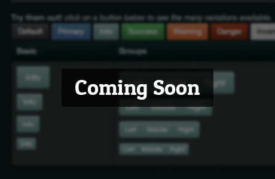

Licensed under [CC BY 3.0] and free to use and download here and on GitHub.
Based on @twitter's Bootstrap (<3!).
Hosted on GitHub (free hosting FTW!)
These awesome peeps in no way endorse us.We'll keep you in the loop about new themes, and the awesome plans in the pipeline.
We also promise not to spam you with updates about our prosperous porn careers.
Follow @bootstrapinator


We love being able to quickly iterate and build concepts using bootstrap. However, we've discovered that more and more sites are starting to look the same, because their creators never find time to customize the CSS.
Bootstrapinator is our attempt to create some quality themes that can easily be added to existing projects while maintaining the great framework of Bootstrap.